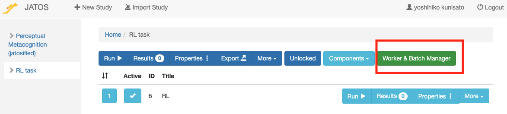

JATOSをDockerを使ってローカルPCに導入する方法
JSTOS(Just Another Tool for Online Studies)を用いて，jsPsychで作成した実験課題をローカルで実施してみましょう。
JATOSで用いるためにjsPsychのコードを修正する
JATOSで用いるためにjsPsychのコードを修正します。詳細は，こちらを確認ください。
- JATOSで動作するjsライブラリを読み込むために，HTMLファイルのheadに以下を追加します。
<script src="jatos.js"></script>- jsPsych.initをjatos.onLoad内にいれ，データをJATOSに保存できるようにします。以下のように，var resultJson = jsPsych.data.get().json()と jatos.submitResultData(resultJson, jatos.startNextComponent)を追加することで，jsPsychの結果をJATOSに保存できるようになります。
jatos.onLoad(function() {
jsPsych.init( {
// ...
on_finish: function() {
var resultJson = jsPsych.data.get().json();
jatos.submitResultData(resultJson, jatos.startNextComponent);
}
});
});JATOSで実験を登録する
以下のような画面になったら，＋New Studyをクリックします。
以下のような画面になったら，Titleに課題名を入れ，Study assets' directory nameにディレクトリ名を入れて，Createをクリックします。こうすると，dockerで用意したJATOSの/opt/docker/study_assets_root/内に実験課題用のフォルダが作られます（以下の場合は，/opt/docker/study_assets_root内にrlというフォルダ作られます）。そして，dockerで-vを使ってvolume設定をしていますので，カレントディレクトリ内のjatosフォルダ内のstudy_assets_root内に同様にディレクトリが作成されます。

カレントディレクトリ/jatos/study_assets_root内にjsPsychの課題のファイルをコピーします。これで，結果として/opt/docker/study_assets_root/rl内にjsPsychの課題のファイルをコピーされます。
コピーできたら，以下のように，Componentsをクリックして，+Newをクリックします。
Titleに課題名をいれて，HTML file pathで課題のHTMLファイル名をいれて，Createをクリックします。なお，実験が複数の課題やコンポーネントからなる場合は，複数回登録をしてください。

以下の赤で囲っている部分のRunをクリックすると，ローカルで実験課題を実行できます。テストしてみてください。

ローカルのJATOSで準備した課題をエクスポートする
サーバー上のJATOSに課題をアップロードする場合，ローカルのJATOSで課題を準備してエクスポートしたものを読み込むのが便利です（jsPsychの場合は，推奨されています）。さきほど準備したローカルのJATOSのみて，以下の赤で囲っている部分のExportをクリックします。すると，これまで設定した実験課題がjzip形式で出力されます。なお，jzipは普通のzipと同じで，課題がまとめられて圧縮されたものです。

さて，サーバー上のJATOSに移動します。以下は，私がGCP上に用意したJATOSの画面です。Import Studyをクリックします。
Import Studyをクリックすると，ファイルの選択画面になるので，先程ローカルのJATOSからエクスポートしたjzip形式のファイルを選びます。以下のような画面で，Importを選択ください。左側にインポートした課題が出てきたら，成功です。

ウェブ実験用のURLを準備する
以下で赤い線で囲ったWorker & Batch Managerをクリックします。

以下で赤い線で囲ったGet Worker Linksをクリックします。
Choose worker TypeでGeneral Sigleを選んで，Continueをクリックします。
なお，worker Typeには以下の種類があります。
- Personal Single Worker: 参加者ごとに１回だけ参加できるURLを発行
- Personal Multiple Worker: 参加者ごとに複数回参加できるURLを発行
- General Single Worker: 複数の参加者が１回だけ参加できるURLを発行
- General Multiple Worker:複数の参加者が複数回参加できるURLを発行
- Mturk Worker: Amazon Mechanical Turk用URLを発行
以下のように実験用のURLが表示されますので，参加者に配布して使うことができます。
ウェブ実験結果の確認
参加者の反応はJATOSサーバーに保存されます。結果を確認する場合，以下で赤い線で囲ったResultsをクリックします。

以下のような画面がでてきます。Comp.Result
IDの４も５も私が試しにやってみた結果ですが，４の方は，途中でやめており，５は最後まで取り組みました。参加者の反応データは，たExport Resultsをクリックして，全てか選択したものを出力できます（txt形式で出力されます）。
おまけ：jsPsychとlab.jsをまぜてJATOSで動かす方法
jsPsychで作った課題とlab.jsで作った課題をJATOS上でまとめて動かしたい状況があるかと思います。例えば，lab.jsで課題やアンケートを作って，jsPsychでちょっとややこしい行動課題を作った場合，後からどちらかに統一するのはちょっと面倒です。可能ならそれぞれをJATOS上で統合して実行したいかなと思います。
jsPsych課題の準備
jsPsych課題は以下のGitHubリポジトリの構造を意識して設定をします。
https://github.com/ykunisato/template-jsPsych-task
一般的には，jsPsych課題の名前のついたフォルダ内に，HTMLファイル，jsPsychのプラグインのフォルダ，刺激のフォルダなどを配置すると思います。JATOS上の統合をする場合は，以下のように，HTMLファイルはそれらの１つ上の階層におきます（HTMLファイルがname_of_repositoryフォルダから出て同じ階層にいるかと思います）。それに伴ってHTMLファイルないでのjsPsychプラグインのパス指定は，name_of_repositoryフォルダを含んだものになります（上記のGitHubリポジトリを参照ください）。

lab.js課題の準備
lab.js Buliderで作業して完成したら（lab.jsの導入はこちらをどうぞ），以下のように，JATOS形式で保存します。するとzipファイルがダウンロードされると思います。

ダウロードされたzipを開くと以下のようになっていると思います。

まず，study.jasを削除します。次に，Study内のindex.htmlを上の階層に移動させて，名前を変えます(ここではname_of_taskにしています)。そして，Studyフォルダも課題名にしておきます（以下のような感じにします）。最後に，index.htmlから名前を変更したHTMLファイルを開いて，パスを変更します（各種ファイルの間にname_of_taskフォルダ名が挟まります）。

JATOSify
JATOSifyするためにローカルにjsPsychとlab.jsを統合したフォルダを作ります。今回はstroopフォルダの下に，lab.jsで作った質問紙のquestion.htmlと各種ファイルがはいったquestionフォルダ，jsPsychで作ったストループ課題のstroop.htmlと各種ファイルがはいったstroopフォルダを配置しています。実験全体をコンポーネントに分けて，それぞれをlab.jsとjsPsychが担当している感じです。
上の「JATOSで実験を登録する」を参考にJSATOS上でこの課題をローカルのJATOS上に登録していきます。今回は，Componentsでstroop.htmlとquestion.htmlを登録します。登録すると以下のような感じになります。stroopとquestionが登録されていますね。この順番で課題が実施されるので，JATOS上で実行すると，ストループ課題をしてから，質問紙が実施されます。

ローカルで作成したJATOSify済みのフォルダをエクスポートすれば，サーバー上のJATOSで実行できて，オンライン実験が可能です。以下は，私で試してみた結果です（同一IPアドレスからアクセスするので，テストではGeneral Multipleで実施しました）。参加者ごとにWorkerIDが割り振られて，その下にストループと質問紙の回答があります。

jsPsychとlab.jsを混ぜることができるのは便利ですね。